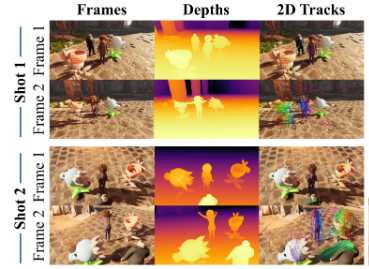

I am currently a first-year Ph.D. student at MMLab@NTU, advised by Prof. Chen Change Loy and Prof. Xingang Pan. I obtained my B.S. degree in Computer Science in 2024 from Nanyang Technological University, where I spent a wonderful time serving as Software Leader for the NTU Super Computing Team.
My research interests lie in 3D/4D spatial AI and generative world modeling enabled by it. I have also worked on low-level vision. Beyond research, I love working on complex systems and building infrastructure for AI training and inference pipelines.
In my free time, I play badminton and occasionally participate in non-professional competitions. I also play the Chinese gourd flute (level 10) for enjoyment.